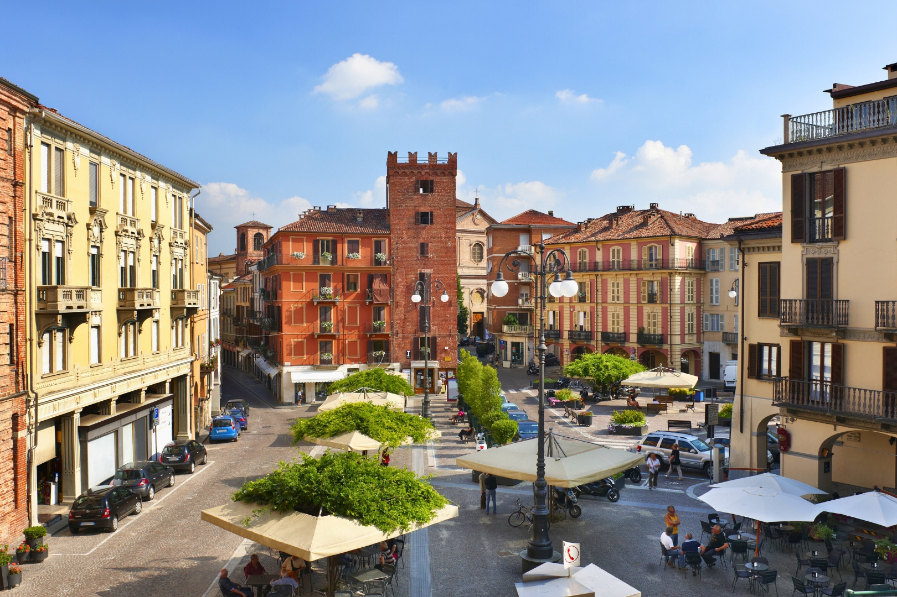
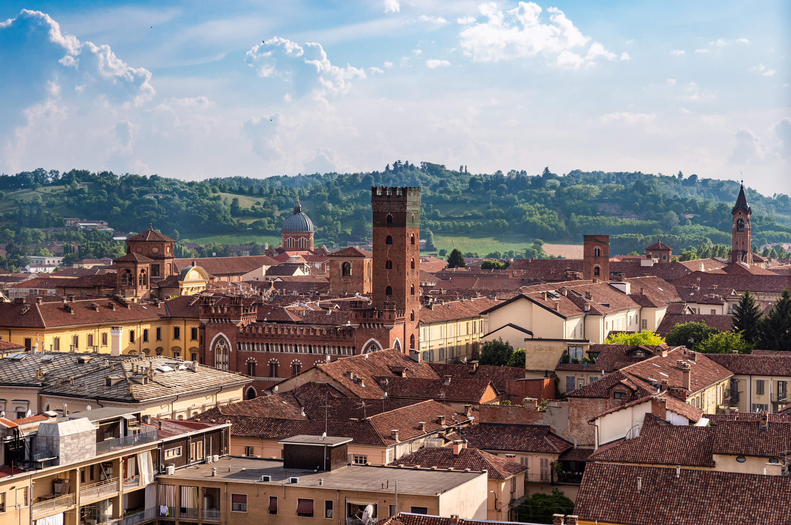

<link rel="stylesheet" href="styles.css" />
<header>
  <h1 id="headere">A minha cidade</h1>
  <nav>
    <a href="/index.html">Home</a>
    <a href="sobre.html">Sobre</a>
    <a href="local.html">Localização</a>
    <a href="multimedia.html">Multimédia</a>
    <a id="selecionada" href="info.html">Informação</a>
  </nav>
</header>

<main class="info-grid">
  <div class="grid-header">
    <h2>Informações</h2>
    <p>
      Consulte abaixo alguns dados demográficos e históricos fascinantes sobre a
      cidade de Asti.
    </p>
  </div>

  <div class="grid-side-img">
    
  </div>

  <div class="grid-main-content">
    <table class="tabela-cidade">
      <tr>
        <th>Categoria</th>
        <th>Característica</th>
        <th>Detalhes Extra</th>
      </tr>
      <tr>
        <td rowspan="2">Geografia e Demografia</td>
        <td>Região de Piemonte</td>
        <td>Norte de Itália</td>
      </tr>
      <tr>
        <td>População</td>
        <td>Aproximadamente 74.000 habitantes</td>
      </tr>
      <tr>
        <td>Cultura e Tradição</td>
        <td colspan="2">
          Mundialmente famosa pelo vinho "Asti Spumante" e pelas corridas de
          cavalos.
        </td>
      </tr>
      <tr>
        <td>História</td>
        <td>Fundada pelos Romanos</td>
        <td>Antigamente conhecida como "Hasta Pompeia"</td>
      </tr>
    </table>
  </div>

  <div class="grid-empty-space"></div>

  <div class="grid-curiosities">
    <h3>5 Curiosidades sobre Asti</h3>
    <ul>
      <li>
        <strong>O Palio di Asti:</strong> É uma das corridas de cavalos mais
        antigas de Itália, realizada anualmente em setembro, com raízes que
        remontam ao século XIII.
      </li>
      <li>
        <strong>Capital do Espumante:</strong> A cidade dá o nome ao famoso
        vinho espumante doce "Asti", produzido com as uvas Moscato branco da
        região.
      </li>
      <li>
        <strong>Cidade das 100 Torres:</strong> Durante a Idade Média, Asti era
        conhecida pelas suas numerosas torres construídas por famílias ricas
        (hoje ainda é possível ver algumas, como a Torre Troyana).
      </li>
      <li>
        <strong>Berço de um Poeta:</strong> É a cidade natal de Vittorio
        Alfieri, um dos dramaturgos e poetas mais importantes do século XVIII em
        Itália.
      </li>
      <li>
        <strong>Gastronomia Rica:</strong> Para além do vinho, a região de Asti
        é um dos locais de excelência para encontrar a famosa e rara trufa
        branca (Tartufo Bianco).
      </li>
    </ul>
  </div>

  <div class="grid-bottom-img">
    
  </div>
</main>

<footer></footer>
